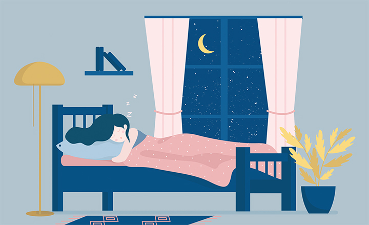

Catch up on Sleep Loss

- If you’ve had months of restricted sleep, it will take several weeks to recover from the significant sleep debt.
- Try to add on an extra hour or 2 of sleep a night (go to bed when you’re tired and allow your body to wake you up in the morning — don’t use alarm clocks).
- Expect to sleep for about 10 hours the first night, the amount of time you sleep will gradually decrease to a normal level.
- Don’t rely on caffeine or energy drinks to help boost your energy and concentration (this may disrupt your sleeping patterns even further in the long term).